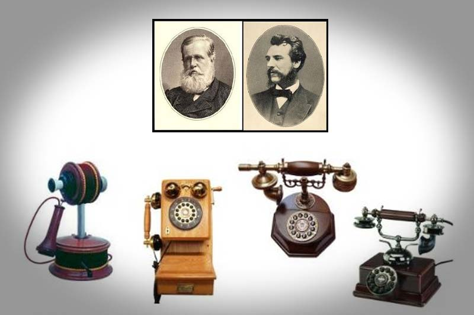

Disputa pelo patentiamento
A invenção e patenteamento do primeiro aparelho de telefone ocorreram na década de 1870. O grande responsável por isso foi o inventor e empresário escocês Alexander Graham Bell (1847-1922). O primeiro registro de transmissão elétrica de voz feito por Graham Bell aconteceu no dia 10 de março de 1876.
Alexander Graham Bell fez parte do rol de cientistas-inventores do século XIX ligados ao campo da eletricidade e eletromagnetismo. No campo específico da transmissão elétrica de voz, aquele que é considerado o pioneiro é o alemão Johann Philipp Reis. Reis foi o primeiro inventor de um artefato próximo ao que seria o telefone, na década de 1850. Todavia, foi Bell que conseguiu produzir o modelo mais completo e eficiente para a época.
Vale ressaltar que, ainda que tenha tido grande mérito na invenção do primeiro telefone, Graham Bell teve que rivalizar com outro inventor, o engenheiro eletricista Elisha Gray (1835-1901), para conseguir patentear o telefone. Bell foi mais rápido no processo de patenteamento e conseguiu para si as vantagens legais para dar continuidade ao seu projeto.
